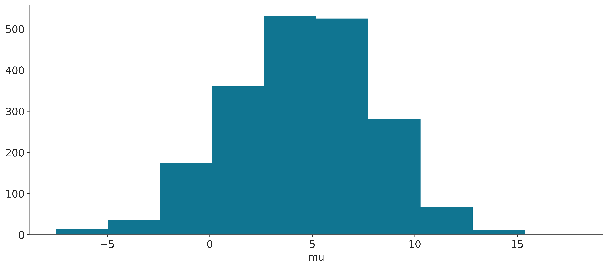

WARNING (pytensor.tensor.blas): Using NumPy C-API based implementation for BLAS functions.2 Working with InferenceData
2.1 InferenceData
During a modern Bayesian analysis we usually generate many sets of data including posterior samples and posterior predictive samples. But we also have observed data, and statistics generated by the sampling method, samples from the prior and/or prior predictive distribution, etc. All this data can be stored in an InferenceData object, to keep them tidy and avoid confusion each one of these sets it is assigned to a different group. For instance, the posterior samples are stored in the posterior group. The observed data is stored in the observed_data group and so on. InferenceData is based on xarray . If you are not familiar with xarray imagine NumPy multidimensional arrays but with labels! This makes many operations easier as you don’t have to remember the order of the dimensions. Each group in an InferenceData is a DataSet and Datasets are dictionary-like containers of DataArrays. You can read more about the terminology used in xarray here
The best way to understand InferenceData is to explore it. ArviZ comes equipped with a few InferenceData objects so we can start playing with them even without the need to fit a model. Let’s start by loading the centered_eight InferenceData. For the moment we do not need to know about the details of the model.
arviz.InferenceData
-
<xarray.Dataset> Size: 165kB Dimensions: (chain: 4, draw: 500, school: 8) Coordinates: * chain (chain) int64 32B 0 1 2 3 * draw (draw) int64 4kB 0 1 2 3 4 5 6 7 ... 493 494 495 496 497 498 499 * school (school) <U16 512B 'Choate' 'Deerfield' ... 'Mt. Hermon' Data variables: mu (chain, draw) float64 16kB ... theta (chain, draw, school) float64 128kB ... tau (chain, draw) float64 16kB ... Attributes: (6) -
<xarray.Dataset> Size: 133kB Dimensions: (chain: 4, draw: 500, school: 8) Coordinates: * chain (chain) int64 32B 0 1 2 3 * draw (draw) int64 4kB 0 1 2 3 4 5 6 7 ... 493 494 495 496 497 498 499 * school (school) <U16 512B 'Choate' 'Deerfield' ... 'Mt. Hermon' Data variables: obs (chain, draw, school) float64 128kB ... Attributes: (4) -
<xarray.Dataset> Size: 133kB Dimensions: (chain: 4, draw: 500, school: 8) Coordinates: * chain (chain) int64 32B 0 1 2 3 * draw (draw) int64 4kB 0 1 2 3 4 5 6 7 ... 493 494 495 496 497 498 499 * school (school) <U16 512B 'Choate' 'Deerfield' ... 'Mt. Hermon' Data variables: obs (chain, draw, school) float64 128kB ... Attributes: (4) -
<xarray.Dataset> Size: 246kB Dimensions: (chain: 4, draw: 500) Coordinates: * chain (chain) int64 32B 0 1 2 3 * draw (draw) int64 4kB 0 1 2 3 4 5 ... 495 496 497 498 499 Data variables: (12/16) max_energy_error (chain, draw) float64 16kB ... energy_error (chain, draw) float64 16kB ... lp (chain, draw) float64 16kB ... index_in_trajectory (chain, draw) int64 16kB ... acceptance_rate (chain, draw) float64 16kB ... diverging (chain, draw) bool 2kB ... ... ... smallest_eigval (chain, draw) float64 16kB ... step_size_bar (chain, draw) float64 16kB ... step_size (chain, draw) float64 16kB ... energy (chain, draw) float64 16kB ... tree_depth (chain, draw) int64 16kB ... perf_counter_diff (chain, draw) float64 16kB ... Attributes: (6) -
<xarray.Dataset> Size: 45kB Dimensions: (chain: 1, draw: 500, school: 8) Coordinates: * chain (chain) int64 8B 0 * draw (draw) int64 4kB 0 1 2 3 4 5 6 7 ... 493 494 495 496 497 498 499 * school (school) <U16 512B 'Choate' 'Deerfield' ... 'Mt. Hermon' Data variables: tau (chain, draw) float64 4kB ... theta (chain, draw, school) float64 32kB ... mu (chain, draw) float64 4kB ... Attributes: (4) -
<xarray.Dataset> Size: 37kB Dimensions: (chain: 1, draw: 500, school: 8) Coordinates: * chain (chain) int64 8B 0 * draw (draw) int64 4kB 0 1 2 3 4 5 6 7 ... 493 494 495 496 497 498 499 * school (school) <U16 512B 'Choate' 'Deerfield' ... 'Mt. Hermon' Data variables: obs (chain, draw, school) float64 32kB ... Attributes: (4) -
<xarray.Dataset> Size: 576B Dimensions: (school: 8) Coordinates: * school (school) <U16 512B 'Choate' 'Deerfield' ... 'Mt. Hermon' Data variables: obs (school) float64 64B ... Attributes: (4) -
<xarray.Dataset> Size: 576B Dimensions: (school: 8) Coordinates: * school (school) <U16 512B 'Choate' 'Deerfield' ... 'Mt. Hermon' Data variables: scores (school) float64 64B ... Attributes: (4)
We can immediately see that we have many groups. This is an HTML representation of the InferenceData, so if you are reading this from a browser you should be able to interact with it. If you click on the posterior group you will see that we have three dimensions, with the names chain, draw, and school, you can think of dimensions as the axes of a plot. This means that the posterior samples were generated by running an MCMC sampler with 4 chains, each one of 500 draws. At least for one of the parameters in the posterior we have and additional dimension called school. If you click on coordinates you will be able to see the actual values that each dimension can take, like the integers [0, 1, 2, 3] for chain and the strings ['Choate', 'Deerfield', 'Phillips Andover', 'Phillips Exeter', 'Hotchkiss', 'Lawrenceville', "St. Paul's", 'Mt. Hermon'] for school, notice that we have an array of dtype=object. Furthermore, if you click on the symbol by the school coordinate, you will be able to see the names of each school.
2.1.1 Get the dataset corresponding to a single group
We can access each group using a dictionary-like notation:
Alternatively, we can use the dot notation, as groups are attributes of the InferenceData object. For instance, to access the posterior group we can write:
<xarray.Dataset> Size: 165kB
Dimensions: (chain: 4, draw: 500, school: 8)
Coordinates:
* chain (chain) int64 32B 0 1 2 3
* draw (draw) int64 4kB 0 1 2 3 4 5 6 7 ... 493 494 495 496 497 498 499
* school (school) <U16 512B 'Choate' 'Deerfield' ... 'Mt. Hermon'
Data variables:
mu (chain, draw) float64 16kB ...
theta (chain, draw, school) float64 128kB ...
tau (chain, draw) float64 16kB ...
Attributes: (6)The dot notation works at the group level and for DataSets and DataArrays as long as there is no conflict with a method or attribute of these objects. If there is a conflict, you can always use the dictionary-like notation.
2.1.2 Get coordinate values
As we have seen, we have 8 schools in this InferenceData with their names. If we want to programmatically access the names we can do
array(['Choate', 'Deerfield', 'Phillips Andover', 'Phillips Exeter',
'Hotchkiss', 'Lawrenceville', "St. Paul's", 'Mt. Hermon'],
dtype='<U16')Which returns a DataSet with the names of the schools. To obtain a NumPy array we can do
array(['Choate', 'Deerfield', 'Phillips Andover', 'Phillips Exeter',
'Hotchkiss', 'Lawrenceville', "St. Paul's", 'Mt. Hermon'],
dtype='<U16')If we want to get the number of schools we can write:
Notice that we do not need to first obtain the NumPy array and then compute the length.
2.1.3 Get a subset of chains
Because we have labels for the names of the schools we can use them to access their associated information. Labels are usually much easier to remember than numerical indices. For instance, to access the posterior samples of the school Choate we can write:
<xarray.Dataset> Size: 52kB
Dimensions: (chain: 4, draw: 500)
Coordinates:
* chain (chain) int64 32B 0 1 2 3
* draw (draw) int64 4kB 0 1 2 3 4 5 6 7 ... 493 494 495 496 497 498 499
school <U16 64B 'Choate'
Data variables:
mu (chain, draw) float64 16kB ...
theta (chain, draw) float64 16kB ...
tau (chain, draw) float64 16kB ...
Attributes: (6)The draw and chain coordinates are indexed using numbers, the following code will return the last draw from chain 1 and chain 2:
<xarray.Dataset> Size: 696B
Dimensions: (chain: 2, school: 8)
Coordinates:
* chain (chain) int64 16B 1 2
draw int64 8B 499
* school (school) <U16 512B 'Choate' 'Deerfield' ... 'Mt. Hermon'
Data variables:
mu (chain) float64 16B ...
theta (chain, school) float64 128B ...
tau (chain) float64 16B ...
Attributes: (6)Usually, in Bayesian statistics, we don’t need to access individual draws or chains, a more common operation is to select a range. For that purpose, we can use Python’s slice function. For example, the following returns the first 200 draws from all chains:
<xarray.Dataset> Size: 66kB
Dimensions: (chain: 4, draw: 201, school: 8)
Coordinates:
* chain (chain) int64 32B 0 1 2 3
* draw (draw) int64 2kB 0 1 2 3 4 5 6 7 ... 194 195 196 197 198 199 200
* school (school) <U16 512B 'Choate' 'Deerfield' ... 'Mt. Hermon'
Data variables:
mu (chain, draw) float64 6kB ...
theta (chain, draw, school) float64 51kB ...
tau (chain, draw) float64 6kB ...
Attributes: (6)Using the slice function we can also remove the first 100 samples.
<xarray.Dataset> Size: 132kB
Dimensions: (chain: 4, draw: 400, school: 8)
Coordinates:
* chain (chain) int64 32B 0 1 2 3
* draw (draw) int64 3kB 100 101 102 103 104 105 ... 495 496 497 498 499
* school (school) <U16 512B 'Choate' 'Deerfield' ... 'Mt. Hermon'
Data variables:
mu (chain, draw) float64 13kB ...
theta (chain, draw, school) float64 102kB ...
tau (chain, draw) float64 13kB ...
Attributes: (6)We can apply the same operations to the entire InferenceData object. Can you anticipate the result?
arviz.InferenceData
-
<xarray.Dataset> Size: 132kB Dimensions: (chain: 4, draw: 400, school: 8) Coordinates: * chain (chain) int64 32B 0 1 2 3 * draw (draw) int64 3kB 100 101 102 103 104 105 ... 495 496 497 498 499 * school (school) <U16 512B 'Choate' 'Deerfield' ... 'Mt. Hermon' Data variables: mu (chain, draw) float64 13kB ... theta (chain, draw, school) float64 102kB ... tau (chain, draw) float64 13kB ... Attributes: (6) -
<xarray.Dataset> Size: 106kB Dimensions: (chain: 4, draw: 400, school: 8) Coordinates: * chain (chain) int64 32B 0 1 2 3 * draw (draw) int64 3kB 100 101 102 103 104 105 ... 495 496 497 498 499 * school (school) <U16 512B 'Choate' 'Deerfield' ... 'Mt. Hermon' Data variables: obs (chain, draw, school) float64 102kB ... Attributes: (4) -
<xarray.Dataset> Size: 106kB Dimensions: (chain: 4, draw: 400, school: 8) Coordinates: * chain (chain) int64 32B 0 1 2 3 * draw (draw) int64 3kB 100 101 102 103 104 105 ... 495 496 497 498 499 * school (school) <U16 512B 'Choate' 'Deerfield' ... 'Mt. Hermon' Data variables: obs (chain, draw, school) float64 102kB ... Attributes: (4) -
<xarray.Dataset> Size: 197kB Dimensions: (chain: 4, draw: 400) Coordinates: * chain (chain) int64 32B 0 1 2 3 * draw (draw) int64 3kB 100 101 102 103 ... 496 497 498 499 Data variables: (12/16) max_energy_error (chain, draw) float64 13kB ... energy_error (chain, draw) float64 13kB ... lp (chain, draw) float64 13kB ... index_in_trajectory (chain, draw) int64 13kB ... acceptance_rate (chain, draw) float64 13kB ... diverging (chain, draw) bool 2kB ... ... ... smallest_eigval (chain, draw) float64 13kB ... step_size_bar (chain, draw) float64 13kB ... step_size (chain, draw) float64 13kB ... energy (chain, draw) float64 13kB ... tree_depth (chain, draw) int64 13kB ... perf_counter_diff (chain, draw) float64 13kB ... Attributes: (6) -
<xarray.Dataset> Size: 36kB Dimensions: (chain: 1, draw: 400, school: 8) Coordinates: * chain (chain) int64 8B 0 * draw (draw) int64 3kB 100 101 102 103 104 105 ... 495 496 497 498 499 * school (school) <U16 512B 'Choate' 'Deerfield' ... 'Mt. Hermon' Data variables: tau (chain, draw) float64 3kB ... theta (chain, draw, school) float64 26kB ... mu (chain, draw) float64 3kB ... Attributes: (4) -
<xarray.Dataset> Size: 29kB Dimensions: (chain: 1, draw: 400, school: 8) Coordinates: * chain (chain) int64 8B 0 * draw (draw) int64 3kB 100 101 102 103 104 105 ... 495 496 497 498 499 * school (school) <U16 512B 'Choate' 'Deerfield' ... 'Mt. Hermon' Data variables: obs (chain, draw, school) float64 26kB ... Attributes: (4) -
<xarray.Dataset> Size: 576B Dimensions: (school: 8) Coordinates: * school (school) <U16 512B 'Choate' 'Deerfield' ... 'Mt. Hermon' Data variables: obs (school) float64 64B ... Attributes: (4) -
<xarray.Dataset> Size: 576B Dimensions: (school: 8) Coordinates: * school (school) <U16 512B 'Choate' 'Deerfield' ... 'Mt. Hermon' Data variables: scores (school) float64 64B ... Attributes: (4)
If you check the object you will see that the groups posterior, posterior_predictive, log_likelihood, sample_stats, prior, and prior_predictive have 400 draws compared to the original 500. The group observed_data has not been affected because it does not have the draw dimension. Alternatively, you can specify which group or groups you want to change.
2.1.4 Compute posterior mean
We can perform operations on the InferenceData object. For instance, to compute the mean of the first 200 draws we can write:
<xarray.Dataset> Size: 24B
Dimensions: ()
Data variables:
mu float64 8B 4.542
theta float64 8B 5.005
tau float64 8B 4.196In NumPy, it is common to perform operations like this along a given axis. With InferecenData/xarray we can do the same by specifying the dimension along which we want to operate. For instance, to compute the mean along the draw dimension we can write:
<xarray.Dataset> Size: 864B
Dimensions: (chain: 4, school: 8)
Coordinates:
* chain (chain) int64 32B 0 1 2 3
* school (school) <U16 512B 'Choate' 'Deerfield' ... 'Mt. Hermon'
Data variables:
mu (chain) float64 32B 4.246 4.184 4.659 4.855
theta (chain, school) float64 256B 5.793 4.648 3.742 ... 4.14 6.74 5.275
tau (chain) float64 32B 3.682 4.247 4.656 3.912This returns the mean for each chain and school. Can you anticipate how different this would be if the dimension was chain instead of draw? And what about if we use school?
We can also specify multiple dimensions. For instance, to compute the mean along the draw and chain dimensions we can write:
<xarray.Dataset> Size: 592B
Dimensions: (school: 8)
Coordinates:
* school (school) <U16 512B 'Choate' 'Deerfield' ... 'Mt. Hermon'
Data variables:
mu float64 8B 4.486
theta (school) float64 64B 6.46 5.028 3.938 4.872 3.667 3.975 6.581 4.772
tau float64 8B 4.1242.1.5 Combine chains and draws
Our primary goal is usually to obtain posterior samples and thus we aren’t concerned with chains and draws. In those cases, we can use the az.extract function. This combines the chain and draw into a sample coordinate which can make further operations easier. By default, az.extract works on the posterior, but you can specify other groups using the group argument.
<xarray.Dataset> Size: 209kB
Dimensions: (sample: 2000, school: 8)
Coordinates:
* school (school) <U16 512B 'Choate' 'Deerfield' ... 'Mt. Hermon'
* sample (sample) object 16kB MultiIndex
* chain (sample) int64 16kB 0 0 0 0 0 0 0 0 0 0 0 ... 3 3 3 3 3 3 3 3 3 3 3
* draw (sample) int64 16kB 0 1 2 3 4 5 6 7 ... 493 494 495 496 497 498 499
Data variables:
mu (sample) float64 16kB 7.872 3.385 9.1 7.304 ... 1.767 3.486 3.404
theta (school, sample) float64 128kB 12.32 11.29 5.709 ... 8.452 1.295
tau (sample) float64 16kB 4.726 3.909 4.844 1.857 ... 2.741 2.932 4.461
Attributes: (6)You can achieve the same result using idata.posterior.stack(sample=("chain", "draw")). But extract can be more flexible because it takes care of the most common subsetting operations with MCMC samples. It can:
- Combine
chainsanddraws - Return a subset of variables (with optional filtering with regular expressions or string matching)
- Return a subset of samples. Moreover, by default, it returns a random subset to prevent getting non-representative samples due to bad mixing.
- Access any group
To get a subsample we can specify the number of samples we want with the num_samples argument. For instance, to get 100 samples we can write:
If you need to extract subsets from multiple groups, you should use a random seed. This will ensure that subsamples match. For example, if you do
You can inspect the samples in the posterior and ll variables and see that they match.
2.2 Ploting
xarray has some plotting capabilities, for instance we can do:
(array([ 13., 35., 175., 360., 531., 525., 281., 67., 11., 2.]),
array([-7.50947899, -4.96819655, -2.42691411, 0.11436834, 2.65565078,
5.19693322, 7.73821566, 10.2794981 , 12.82078055, 15.36206299,
17.90334543]),
<BarContainer object of 10 artists>)
But in most scenarios calling a plotting function from ArviZ and passing the InfereceData as an argument will be a much better idea.
2.3 Add a new variable
We can add variables to existing groups. For instance, we may want to transform a parameter from the posterior. Like computing and adding the \(\log\) of the parameter \(\tau\) to the posterior group.
<xarray.Dataset> Size: 12kB
Dimensions: (sample: 100, school: 8)
Coordinates:
* school (school) <U16 512B 'Choate' 'Deerfield' ... 'Mt. Hermon'
* sample (sample) object 800B MultiIndex
* chain (sample) int64 800B 0 0 0 0 0 1 3 3 2 2 1 ... 1 1 2 1 0 3 1 3 2 2 1
* draw (sample) int64 800B 385 210 398 410 366 7 ... 470 145 415 455 67
Data variables:
mu (sample) float64 800B -0.5899 3.603 3.139 ... 10.06 1.695 1.798
theta (school, sample) float64 6kB 0.1299 -0.3171 1.546 ... -0.161 4.141
tau (sample) float64 800B 2.567 3.013 1.535 4.472 ... 10.63 6.453 4.329
log_tau (sample) float64 800B 0.9426 1.103 0.4285 ... 2.364 1.865 1.465
Attributes: (6)2.4 Advance operations with InferenceData
Now we delve into more advanced operations with InferenceData. While these operations are not essential to use ArviZ, they can be useful in some cases. Exploring these advanced functionalities will help you become more familiar with InferenceData and provide additional insights that may enhance your overall experience with ArviZ.
2.4.1 Compute and store posterior pushforward quantities
We use “posterior pushforward quantities” to refer to quantities that are not variables in the posterior but deterministic computations using posterior variables.
You can use xarray for these pushforward operations and store them as a new variable in the posterior group. You’ll then be able to plot them with ArviZ functions, calculate stats and diagnostics on them (like mcse), or save and share the InferenceData object with the pushforward quantities included.
The first thing we are going to do is to store the posterior group in a variable called post to make the code more readable. And to compute the log of \(\tau\).
Compute the rolling mean of \(\log(\tau)\) with xarray.DataArray.rolling, storing the result in the posterior:
Using xarray for pushforward calculations has all the advantages of working with xarray. It also inherits the disadvantages of working with xarray, but we believe those to be outweighed by the advantages, and we have already shown how to extract the data as NumPy arrays. Working with InferenceData is working mainly with xarray objects and this is what is shown in this guide.
Some examples of these advantages are specifying operations with named dimensions instead of positional ones (as seen in some previous sections), automatic alignment and broadcasting of arrays (as we’ll see now), or integration with Dask (as shown in the dask_for_arviz guide).
In this cell, you will compute pairwise differences between schools on their mean effects (variable theta). To do so, subtract the variable theta after renaming the school dimension to the original variable. Xarray then aligns and broadcasts the two variables because they have different dimensions, and the result is a 4D variable with all the pointwise differences.
Eventually, store the result in the theta_school_diff variable. Notice that the theta_shool_diff variable in the posterior has kept the named dimensions and coordinates:
<xarray.Dataset> Size: 1MB
Dimensions: (chain: 4, draw: 500, school: 8, school_bis: 8)
Coordinates:
* chain (chain) int64 32B 0 1 2 3
* draw (draw) int64 4kB 0 1 2 3 4 5 ... 494 495 496 497 498 499
* school (school) <U16 512B 'Choate' 'Deerfield' ... 'Mt. Hermon'
* school_bis (school_bis) <U16 512B 'Choate' ... 'Mt. Hermon'
Data variables:
mu (chain, draw) float64 16kB 7.872 3.385 ... 3.486 3.404
theta (chain, draw, school) float64 128kB 12.32 9.905 ... 1.295
tau (chain, draw) float64 16kB 4.726 3.909 ... 2.932 4.461
log_tau (chain, draw) float64 16kB 1.553 1.363 ... 1.076 1.495
mlogtau (chain, draw) float64 16kB nan nan nan ... 1.496 1.511
theta_school_diff (chain, draw, school, school_bis) float64 1MB 0.0 ... 0.0
Attributes: (6)2.4.2 Advanced subsetting
To select the value corresponding to the difference between the Choate and Deerfield schools do:
<xarray.DataArray 'theta_school_diff' (chain: 4, draw: 500)> Size: 16kB
2.415 2.156 -0.04943 1.228 3.384 9.662 ... -1.656 -0.4021 1.524 -3.372 -6.305
Coordinates:
* chain (chain) int64 32B 0 1 2 3
* draw (draw) int64 4kB 0 1 2 3 4 5 6 7 ... 493 494 495 496 497 498 499
school <U16 64B 'Choate'
school_bis <U16 64B 'Deerfield'For more advanced subsetting (the equivalent to what is sometimes called “fancy indexing” in NumPy) you need to provide the indices as DataArray objects:
school_idx = xr.DataArray(["Choate", "Hotchkiss", "Mt. Hermon"], dims=["pairwise_school_diff"])
school_bis_idx = xr.DataArray(
["Deerfield", "Choate", "Lawrenceville"], dims=["pairwise_school_diff"]
)
post["theta_school_diff"].sel(school=school_idx, school_bis=school_bis_idx)<xarray.DataArray 'theta_school_diff' (chain: 4, draw: 500,
pairwise_school_diff: 3)> Size: 48kB
2.415 -6.741 -1.84 2.156 -3.474 3.784 ... -2.619 6.923 -6.305 1.667 -6.641
Coordinates:
* chain (chain) int64 32B 0 1 2 3
* draw (draw) int64 4kB 0 1 2 3 4 5 6 7 ... 493 494 495 496 497 498 499
school (pairwise_school_diff) <U16 192B 'Choate' ... 'Mt. Hermon'
school_bis (pairwise_school_diff) <U16 192B 'Deerfield' ... 'Lawrenceville'
Dimensions without coordinates: pairwise_school_diffUsing lists or NumPy arrays instead of DataArrays does column/row-based indexing. As you can see, the result has 9 values of theta_shool_diff instead of the 3 pairs of difference we selected in the previous cell:
post["theta_school_diff"].sel(
school=["Choate", "Hotchkiss", "Mt. Hermon"],
school_bis=["Deerfield", "Choate", "Lawrenceville"],
)<xarray.DataArray 'theta_school_diff' (chain: 4, draw: 500, school: 3,
school_bis: 3)> Size: 144kB
2.415 0.0 -4.581 -4.326 -6.741 -11.32 ... 1.667 -6.077 -5.203 1.102 -6.641
Coordinates:
* chain (chain) int64 32B 0 1 2 3
* draw (draw) int64 4kB 0 1 2 3 4 5 6 7 ... 493 494 495 496 497 498 499
* school (school) <U16 192B 'Choate' 'Hotchkiss' 'Mt. Hermon'
* school_bis (school_bis) <U16 192B 'Deerfield' 'Choate' 'Lawrenceville'2.4.3 Add new chains using concat
After checking the mcse and realizing you need more samples, you rerun the model with two chains and obtain an idata_rerun object.
You can combine the two into a single InferenceData object using the concat function from ArviZ:
/tmp/ipykernel_2149/149534111.py:2: FutureWarning: The return type of `Dataset.dims` will be changed to return a set of dimension names in future, in order to be more consistent with `DataArray.dims`. To access a mapping from dimension names to lengths, please use `Dataset.sizes`.
idata_complete.posterior.dims["chain"]62.4.4 Add groups to InferenceData objects
To add new groups to InferenceData objects you can use the extend method if the new groups are already in an InferenceData object or the add_groups method if the new groups are dictionaries or xarray.Dataset objects.
rng = np.random.default_rng(3)
idata.add_groups(
{"predictions": {"obs": rng.normal(size=(4, 500, 2))}},
dims={"obs": ["new_school"]},
coords={"new_school": ["Essex College", "Moordale"]},
)
idataarviz.InferenceData
-
<xarray.Dataset> Size: 1MB Dimensions: (chain: 4, draw: 500, school: 8, school_bis: 8) Coordinates: * chain (chain) int64 32B 0 1 2 3 * draw (draw) int64 4kB 0 1 2 3 4 5 ... 494 495 496 497 498 499 * school (school) <U16 512B 'Choate' 'Deerfield' ... 'Mt. Hermon' * school_bis (school_bis) <U16 512B 'Choate' ... 'Mt. Hermon' Data variables: mu (chain, draw) float64 16kB 7.872 3.385 ... 3.486 3.404 theta (chain, draw, school) float64 128kB 12.32 9.905 ... 1.295 tau (chain, draw) float64 16kB 4.726 3.909 ... 2.932 4.461 log_tau (chain, draw) float64 16kB 1.553 1.363 ... 1.076 1.495 mlogtau (chain, draw) float64 16kB nan nan nan ... 1.496 1.511 theta_school_diff (chain, draw, school, school_bis) float64 1MB 0.0 ... 0.0 Attributes: (6) -
<xarray.Dataset> Size: 133kB Dimensions: (chain: 4, draw: 500, school: 8) Coordinates: * chain (chain) int64 32B 0 1 2 3 * draw (draw) int64 4kB 0 1 2 3 4 5 6 7 ... 493 494 495 496 497 498 499 * school (school) <U16 512B 'Choate' 'Deerfield' ... 'Mt. Hermon' Data variables: obs (chain, draw, school) float64 128kB ... Attributes: (4) -
<xarray.Dataset> Size: 36kB Dimensions: (chain: 4, draw: 500, new_school: 2) Coordinates: * chain (chain) int64 32B 0 1 2 3 * draw (draw) int64 4kB 0 1 2 3 4 5 6 7 ... 493 494 495 496 497 498 499 * new_school (new_school) <U13 104B 'Essex College' 'Moordale' Data variables: obs (chain, draw, new_school) float64 32kB 2.041 -2.556 ... -0.2822 Attributes: (2) -
<xarray.Dataset> Size: 133kB Dimensions: (chain: 4, draw: 500, school: 8) Coordinates: * chain (chain) int64 32B 0 1 2 3 * draw (draw) int64 4kB 0 1 2 3 4 5 6 7 ... 493 494 495 496 497 498 499 * school (school) <U16 512B 'Choate' 'Deerfield' ... 'Mt. Hermon' Data variables: obs (chain, draw, school) float64 128kB -4.173 -3.24 ... -3.853 -3.986 Attributes: (4) -
<xarray.Dataset> Size: 246kB Dimensions: (chain: 4, draw: 500) Coordinates: * chain (chain) int64 32B 0 1 2 3 * draw (draw) int64 4kB 0 1 2 3 4 5 ... 495 496 497 498 499 Data variables: (12/16) max_energy_error (chain, draw) float64 16kB ... energy_error (chain, draw) float64 16kB ... lp (chain, draw) float64 16kB ... index_in_trajectory (chain, draw) int64 16kB ... acceptance_rate (chain, draw) float64 16kB ... diverging (chain, draw) bool 2kB ... ... ... smallest_eigval (chain, draw) float64 16kB ... step_size_bar (chain, draw) float64 16kB ... step_size (chain, draw) float64 16kB ... energy (chain, draw) float64 16kB ... tree_depth (chain, draw) int64 16kB ... perf_counter_diff (chain, draw) float64 16kB ... Attributes: (6) -
<xarray.Dataset> Size: 45kB Dimensions: (chain: 1, draw: 500, school: 8) Coordinates: * chain (chain) int64 8B 0 * draw (draw) int64 4kB 0 1 2 3 4 5 6 7 ... 493 494 495 496 497 498 499 * school (school) <U16 512B 'Choate' 'Deerfield' ... 'Mt. Hermon' Data variables: tau (chain, draw) float64 4kB ... theta (chain, draw, school) float64 32kB ... mu (chain, draw) float64 4kB ... Attributes: (4) -
<xarray.Dataset> Size: 37kB Dimensions: (chain: 1, draw: 500, school: 8) Coordinates: * chain (chain) int64 8B 0 * draw (draw) int64 4kB 0 1 2 3 4 5 6 7 ... 493 494 495 496 497 498 499 * school (school) <U16 512B 'Choate' 'Deerfield' ... 'Mt. Hermon' Data variables: obs (chain, draw, school) float64 32kB ... Attributes: (4) -
<xarray.Dataset> Size: 576B Dimensions: (school: 8) Coordinates: * school (school) <U16 512B 'Choate' 'Deerfield' ... 'Mt. Hermon' Data variables: obs (school) float64 64B ... Attributes: (4) -
<xarray.Dataset> Size: 576B Dimensions: (school: 8) Coordinates: * school (school) <U16 512B 'Choate' 'Deerfield' ... 'Mt. Hermon' Data variables: scores (school) float64 64B ... Attributes: (4)
2.5 Final remarks
We have discussed a few of the most common operations with InferenceData objects. If you want to learn more about InferenceData, you can check the InferenceData API documentation.
If you have doubts about how to use InferenceData with ArviZ functions, you can ask questions at PyMC’s discourse